Tools
The collaboration tools we used include GitHub, Microsoft Teams, Microsoft Office Suite and Canvas. The true state of group efforts was reflected most in Microsoft Teams, as collaboration was mostly done on this platform. As the submission is a PDF file, the team felt that this was the best platform.
Microsoft Teams
Channels we have created and their purposes:
- General -This channel was the most used to discuss initial decisions and for other project items not covered by the other channels listed below. The ‘A2 Tasks’ tab within it contained the team’s Kanban board. The ‘Files’ tab contained all sorts of uncategorized documents within it.
- -Off Topic - This channel was created as a forum for funny and off-topic things we find on the internet or in our daily lives. This was created to simulate a break room as we are physically limited.
- A2 Final Assessment - This channel’s purpose served the discussion of all final document items produced for the group project. The ‘Files’ tab within it contains working documents and final documents.
- A2 Interview with IT Professional - This channel was used to discuss and organize interviews with IT professional for the purpose of writing the essay. The ‘Files’ tab within it contains draft documents, final documents and interview recordings.
- A2 IT Technologies Essay - This channel was created to discuss the progress of the assigned essays to respective team members. The ‘Files’ tab within it contains draft essays, final essays and a recording of general help provided from team members to others.
- A2 Project Idea - This channel was created for the purpose of discussing the ‘Project Idea’ component of the assignment. We have found that communicating within this channel proved difficult because it was difficult to view replies from other team members. Therefore, for project idea discussions, chat was used between team members as it was more fluid and easier to catch up on messages missed by team members. The ‘Files’ tab within it was meant to store working documents of the ‘Project Idea’ but instead, the General -> Files tab was used.
- A2 Webpage Design - This channel was created for the purpose of discussing the webpage’s look and feel. Team members made decisions based on votes. The ‘Files’ tab within it was used to store general files relating to the webpage design. Files for the webpage were stored in a GitHub repository.
- Stand-Up Meetings - This channel served the purpose of the team’s ‘meeting room’ to schedule meetings and discussing their agendas. The ‘Files’ tab within it stored the agendas, minutes, meeting recordings, and agendas and meetings templates in their respective folders.
Tools we have used within Microsoft Teams:
- Polly
- To determine the best choices. i.e. theme colours, logos, team names and meeting times.
- Tasks by Planner and To Do
- As a task list to track remaining tasks and deadlines.
- As a Kanban board for agile project management.
- SharePoint
- Uploading and sharing of files.
- Microsoft Excel
- For data analysis purposes.
- Microsoft Word
- For document creation.
- Chat
- For general communication purposes, to update each other on work done.
- As most of the team’s more natural conversations took place here, the chat’s history became lengthy, and the team found that it was very difficult, if not impossible, to export the chat log. The team has concluded that, in future, discussions about specified project items must take place in their respective channels for the purpose of analytics tracking.
Microsoft Teams Analytics
- The Teams channel analytics can be found in the following path:
- Fully Developed – IIT Group -> Manage team -> Analytics
- The period for the analysis was between 12/09/2021 – 11/10/2021, as the only options available were ‘Last 7 Days’, ‘Last 30 Days’ and ‘Last 90 Days’. As the period for this project was 4 weeks. The most suitable time period’s analytics was ‘Last 30 Days’.
- The following view is a summary of the team’s analytics:
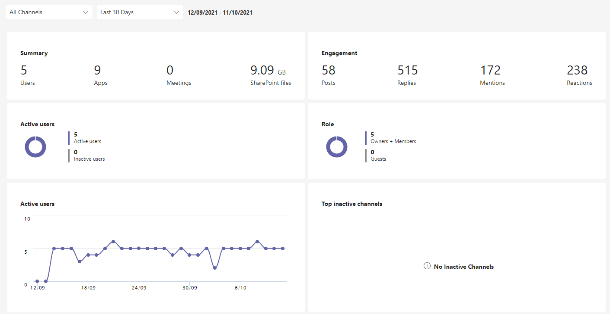
- Summary
From the following screenshot, it is observed that there were 5 users which was representative of 5 team members active in this Teams group. 9 applications were used within the channels, of which 5 applications were deemed most suitable for the purpose of this project. It is seen that 0 meetings were held which is incorrect, as a total of 5 stand-up meetings, 1 impromptu chat session, 1 Interview session, and 1 essay help session took place. A total of 9.09GB of SharePoint files were stored within the channels’ ‘Files’. 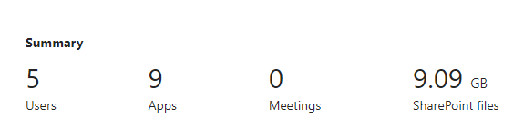
- Engagement
- From the following screenshot, it is observed that 58 posts were made in all channels
and a total of 515 replies were made in response to the posts which makes it an average
of 8.9 replies per post. This signifies a high degree of responsiveness from team members.
Out of the posts, 172 mentions were used to prompt team members into action or to solicit a
response. A total of 238 reactions was observed in response to posts or replies which can
represent the enthusiasm of the team members.
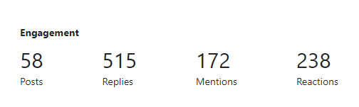
- The following graph illustrates that while engagement numbers are high, the number of posts,
replies, mentions and reactions show a decline after the first week. This was due to tasks
being divided among team members and ‘chat’ between team members were introduced outside the
channels. As it was easier to have conversations in ‘chat’, in-channel engagement reduced.
However, due to the nature of ‘chat’, the chat history was impossible to obtain.
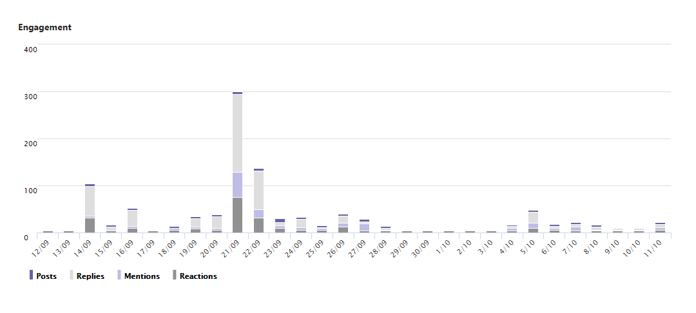
- From the following screenshot, it is observed that 58 posts were made in all channels
and a total of 515 replies were made in response to the posts which makes it an average
of 8.9 replies per post. This signifies a high degree of responsiveness from team members.
Out of the posts, 172 mentions were used to prompt team members into action or to solicit a
response. A total of 238 reactions was observed in response to posts or replies which can
represent the enthusiasm of the team members.
- Users
From the graph, it can be observed that even though the official start date of the project was after the 19th of September, this teams was formed on the 14th of September 2021 which signifies a high level of enthusiasm and positivity. The active users per day vary throughout this period however, it mostly tracks at 5 users active per day. The dips usually occur on the weekends.
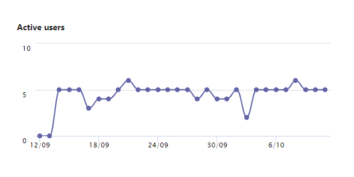
- Tasks
The reasoning behind using a Kanban board to track the team’s progress was to immerse the team in the basics of agile project management. Kanban boards are widely used in software development companies to assist in a bird’s-eye view of project tasks, to limit overworking and to increase efficiency (Rehkopf 2019).- ‘Tasks by Task Planner’ was used to track our tasks. The board view was used. The following
screenshot is a representation of how we tracked our tasks:
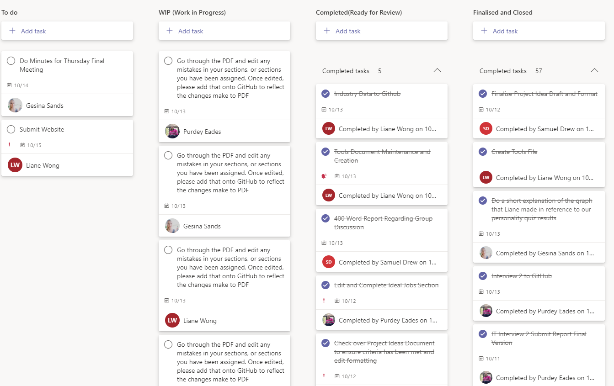
- The pie chart in ‘Charts’ show the status of the tasks in the planner. As of 13th October 2021,
the charts shows that there are 4 tasks not started, 2 in progress, 1 late task and 60
tasks completed in the entirety of the project.
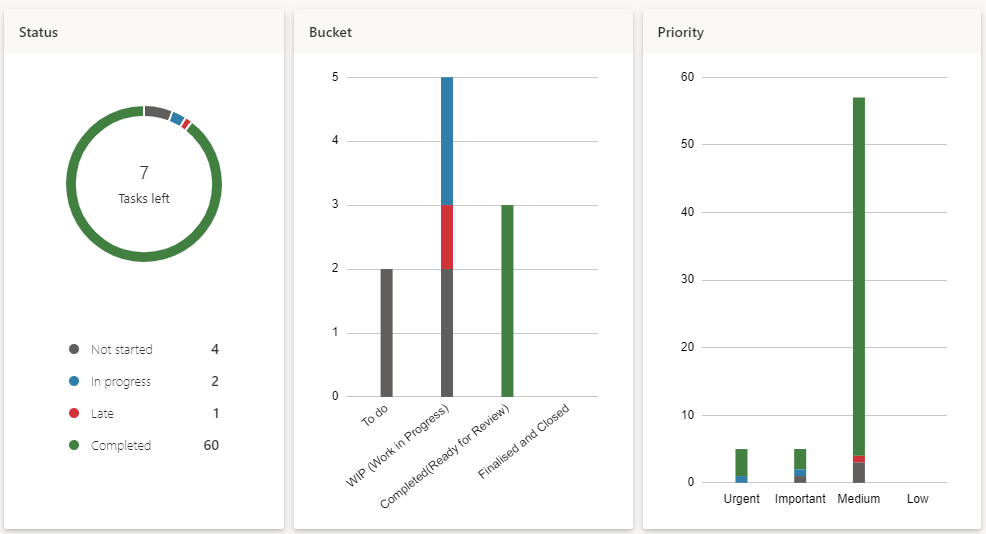
- This bar graph shows the number of tasks completed by individual members. The graph did not
represent the data accurately because a group members tasks completed did not show in this
graph due to a bug in the application.
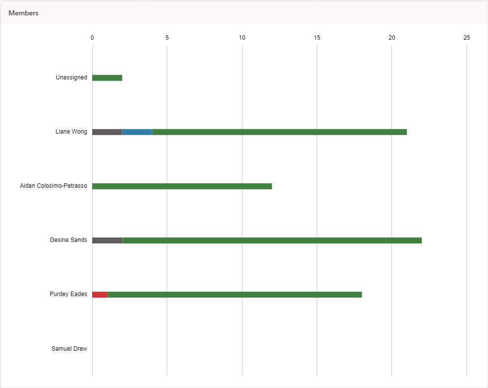
Another view by a different team member:
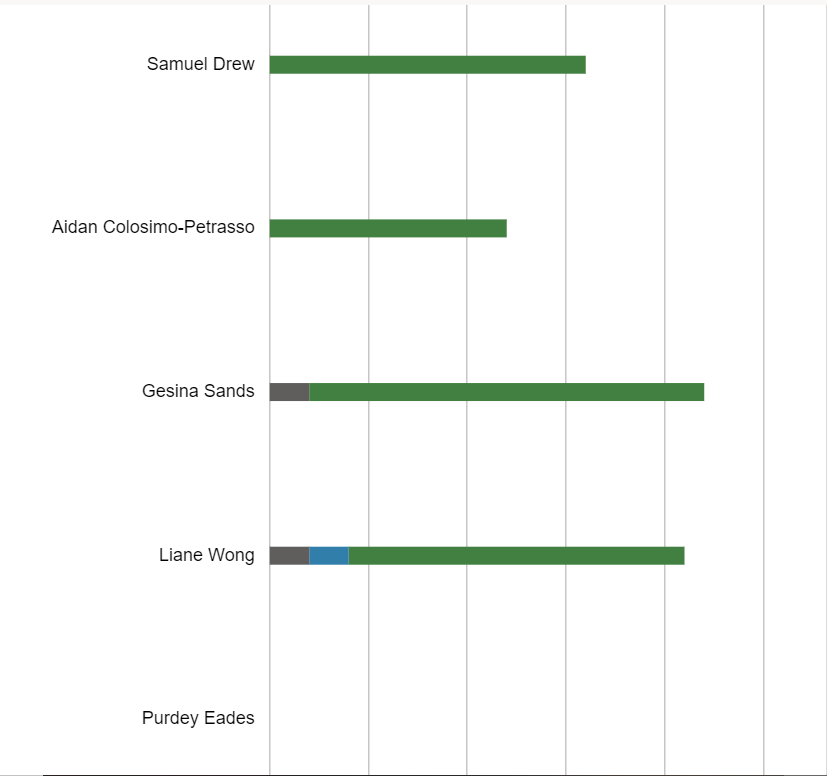
- ‘Tasks by Task Planner’ was used to track our tasks. The board view was used. The following
screenshot is a representation of how we tracked our tasks:
GitHub
The team used GitHub to store the images, CSS and HTML codes which formed the webpage. According to Jaehnig (2021), GitHub is a platform for storing, editing, and hosting code. It is widely used to host webpages, collaborating and organising projects between project team members. ‘Repositories’ are used to store code for projects.
Insights
Link: Pulse · GSMSands/fully-developed (github.com)
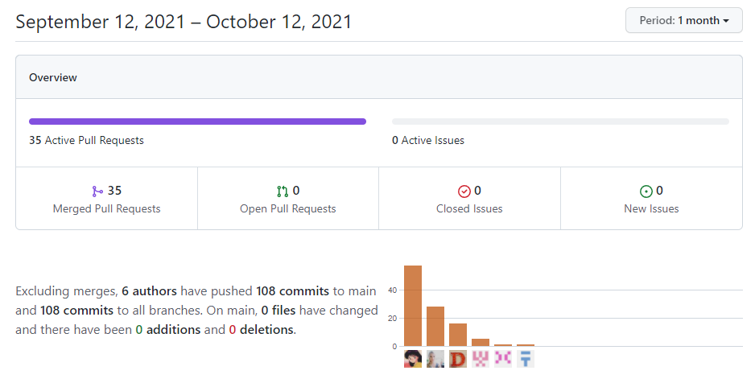
The period chosen for the insights represent the entire project length. From the image, it can be observed that excluding merges, 6 authors have pushed 108 commits to main and 108 commits to all branches. On main, 0 files have changed and there have been 0 additions and 0 deletions for the reason being that all branches which currently exist are even with main.
Contributions
The following graphs represent the aggregate number of commits made by team members.
- This graph shows that from 19th of September 2021 to 13th October 2021, the number of commits increased exponentially. This is due to nearing of the project’s due date.
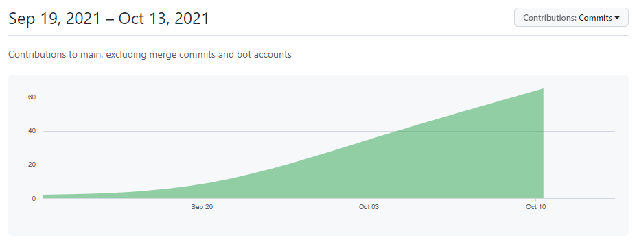
- These graphs represent the amount of commits per team member. As Liane Wong (celestes23) was assigned
the task of website creation, the graph representing her contributions appear conclude that she contributed
the most, but this does not reflect her contributions versus her teammates’ as a whole as this repository
was used mainly for website creation and storage of code.
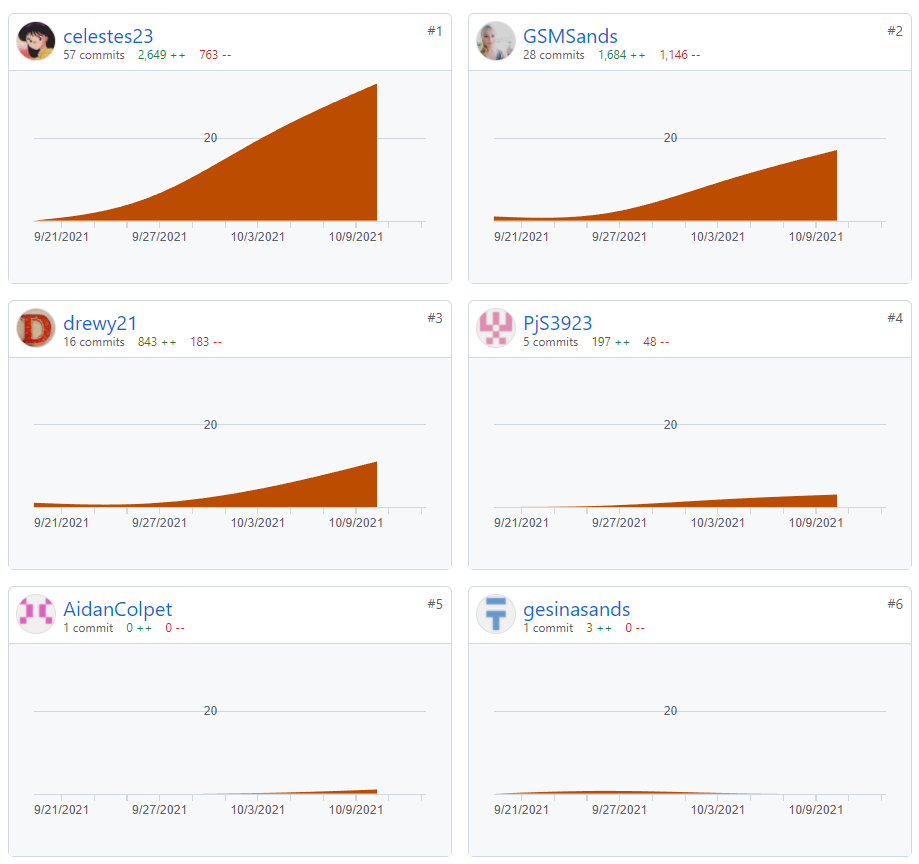
- The following graph shows the increasing additions and deletions nearing the due date of the project.
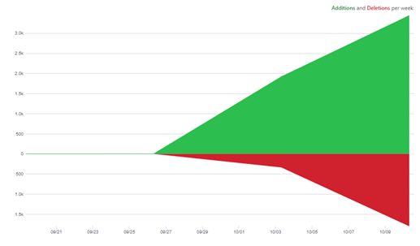
Canvas
Canvas is a web-based learning management system (LMS) used by universities, schools and other institutions. Course content, resources, feedback and forums can be found in this application (RMIT University n.d.). As RMIT uses Canvas, this team, Fully-Developed was formed on Canvas.
While Canvas was useful in the formation of the team, it was not used very often due to the nature of forums and the time it takes to receive a response from a team member. The following image is an example of the ‘Discussions’ landing page:
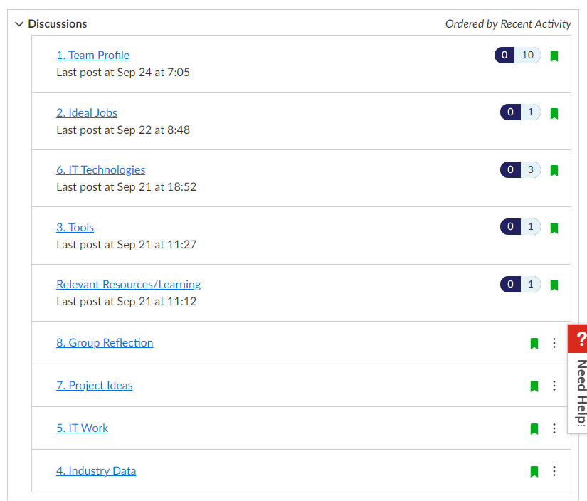
Software and Applications
- Microsoft Office Suite
- Microsoft Word
- Microsoft PowerPoint
- Microsoft Excel
- Microsoft Publisher
- Integrated Development Environment (IDE)
- Atom
- Visual Studio (VS) Code
- Notepad++
- Adobe Creative Cloud products
- Adobe Photoshop
- Adobe Acrobat
- Adobe Reader
- Git
- GitHub Desktop
- Git Bash
- Referencing and essay writing
- Other Applications
- Snip & Sketch
- Microsoft Edge
- Google Chrome
- Brave
- Grammarly
- Samsung Galaxy Voice Recorder Application
- Canva
References
- Jaehnig, J 2021, What Is GitHub? An Introduction to Its Basic Features, MUO - Make Use Of, viewed 13 October 2021, < https://www.makeuseof.com/what-is-github-an-introduction/ >.
- Rehkopf, M 2019, What is a kanban board?, Atlassian, viewed 13 October 2021, < https://www.atlassian.com/agile/kanban/boards >.
- RMIT University n.d., Canvas, www.rmit.edu.au, viewed 13 October 2021, < https://www.rmit.edu.au/students/support-and-facilities/it-services-for-students/canvas >.